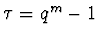
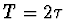
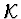
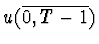
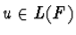
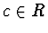
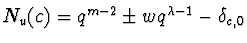
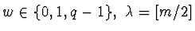

A.S.KUZMIN, A.A.NECHAEV
Let R=GR(q2,4) be a Galois ring of the characteristic 4 with residue field R/2R =GF(q), q=2k. A monic reversible polynomial F(x) of the degree m over R is called distinquished if its period T over Requals to

; and it is called a polynomial of maximal period if
. Let LR(F) be the family of all linear recurrences with the characteristic polynomial F(x) and
be the set of initial segments
of all recurrences
. Then is a linear code over R. The complete weight enumerator (c.w.e.) of such a code is calculated. It gives the full description of possible types of distributions of the ring R elements on cycles of the family LR(F), and quantity of the cycles of each given type. For example, if T=qm-1 the frequencies of elements
on cycles are described by the numbers
, where
; and quantities are described by the similar expressions. These results in particulary allows to calculate the c.w.e. of generalized Kerdock code over an arbitrary Galois field of characteristic 2. They are based on the theory of quadrics over GF(2k) and essentially precise the estimation of Nu(c) by Kumar,Helleset,Calderbank (1995).Centre of New Information Technologies
of Moscow Lomonosov State University
(e-mail: nechaev@cnit.chem.msu.su)